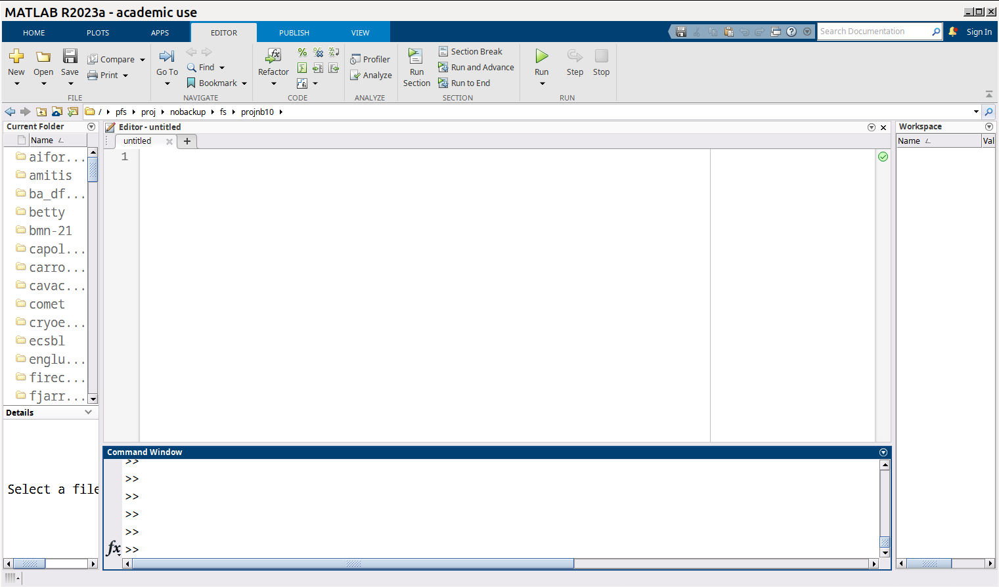
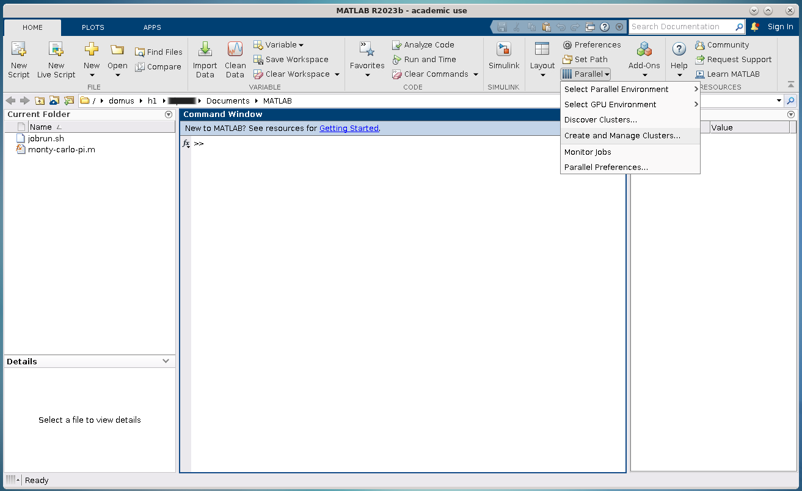
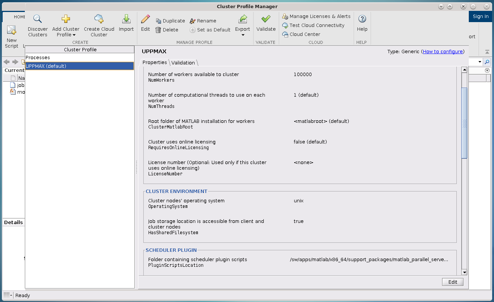

MATLAB GUI and SLURM¶
Here we discuss how MATLAB interacts with SLURM.
Objectives
- Understand and use the Slurm scheduler in MATLAB
- Start batch jobs from MATLAB Graphical User Interface (GUI)
- Try example
MATLAB is well integrated with SLURM and because of that there are several options to run these jobs:
- Writing a batch script as for any other software and submitting the job with the
sbatchcommand from SLURM (This could be useful if you want to run long jobs, and you don’t need to modify the code in the meantime). You have seen this in the previous section. - Using the job scheduler (
batchcommand) in MATLAB graphical user interface (GUI) (This is the Recommended Use). - Starting a
parpoolin the MATLAB GUI with a predefined cluster (This allows for more interactivity).
In the following sections we will extend the last two options.
Important
Compute allocations in this workshop
- Rackham:
uppmax2025-2-360 - Kebnekaise:
hpc2n2025-062 - Cosmos:
lu2025-7-37 - Tetralith:
naiss-2025-22-262 - Dardel:
naiss-2025-22-262
Storage space for this workshop
- Rackham:
/proj/r-py-jl-m-rackham - Kebnekaise:
/proj/nobackup/r-py-jl-m - Cosmos: your home directory should have plenty of space
- Tetralith:
/proj/r-matlab-julia-naiss/users/ - Dardel:
/cfs/klemming/projects/snic/r-matlab-julia-naiss
Warning
- Any longer, resource-intensive, or parallel jobs must be run through a batch script.
- On login nodes, MATLAB should be started with the option
-singleCompThreadto stop it from using more than one thread (a couple of the clusters detect if the user is on a login node and restrict MATLAB to 1 thread automatically, but it’s better to include it to be safe than forget and have your job killed by angry admins). - On some clusters (e.g. COSMOS, Kebnekaise, Dardel), it is possible, and therefore recommended, to start the MATLAB GUI itself on a compute node.
MATLAB Desktop/graphical interface¶
Jobs can be submitted to the SLURM queue directly from the the MATLAB GUI as an alternative
to the standard bash scripts that are used with the command sbatch my-script.sh, for instance.

MATLAB GUI
To submit a job from the GUI, you will need to create a handle for the cluster and then use this handle to send the job and control the outputs:
% Get a handle to the cluster
c=parcluster('name-of-your-cluster')
% Run the job on CPU
j = c.batch(@myfunction, N_out_values, {input1, input2, ...}, 'pool', N_workers')
% alternatively, j=batch(c, @myfunction, N_out_values, {input1, input2, ...}, 'pool', N_workers')
% Wait until the job has finished. Use j.State if you just want to poll the
% status and be able to do other things while waiting for the job to finish.
j.wait
% Fetch the result after the job has finished
j.fetchOutputs{:}
Note that batch also accepts script names in place of function names, but these must be given in single quotes, with no @ or .m. This is useful if your script is a job farm.
In the earlier session on using MATLAB with Slurm at the command line, you learned how to set/edit slurm parameters for jobs on a given cluster, after defining a handle for the cluster, by calling the AdditionalProperties attribute. Below we will discuss an alternative way to do that graphically.
Job settings in the Cluster Profile Manager¶
Tip
You can change the job settings (or make them all together) inside the GUI. To do that, you change the job settings within the Cluster Profile Manager.
Note that this is ONLY if you want to use the GUI. You can work completely from within the MATLAB terminal interface if you want.
If you run MATLAB in the GUI after having configured the cluster, MATLAB will start with a default cluster profile, typically something that includes the name of the cluster. This is just the set of configurations that were set by configCluster. You can view, edit, and/or add to this profile by clicking the Parallel menu icon and selecting Create and Manage Clusters.

Location of Parallel Menu in GUI.

Cluster Profile Manager.
If you scroll down in the window that appears when you select the right cluster, you will see a box titled Scheduler Plugin. This box lets you set SBATCH parameters like
- Your account name (project name),
- Your email address,
- The memory per CPU, including units,
- The number of processes per node,
- Which partition you want,
- Whether you need an exclusive node,
- The name of your reservation, and most importantly,
- The wall time for your job.

Editing parameters of Scheduler Plugin in Cluster Profile Manager.
In other words, almost anything you might otherwise set by calling c.AdditionalProperties.<insert_property>=... can be set in the GUI in this scheduler plugin.
Note
The settings in the Scheduler Plugin for any given cluster profile are saved between sessions. Always check them before running.
If you are on Desktop On Demand on LUNARC, these settings do not override the parameters set in the GfxLauncher for the MATLAB GUI session itself, but rather to any batch jobs you submit from within the GUI.
MATLAB and SLURM¶
Extensive jobs must be run through SLURM. There are different manners to run MATLAB jobs with SLURM, for instance using:
- using the MATLAB GUI
- ThinLinc (LUNARC, UPPMAX, HPC2N)
- interactive (
salloc/interactive) sessions
- interactive (
- Desktop On Demand (LUNARC)
- Open onDemand (HPC2N).
- ThinLinc (LUNARC, UPPMAX, HPC2N)
- batch scripts in a SSH session submitted with
sbatch(less recommended)
Serial jobs¶
As an example consider the following serial function hostnm that is in a file called
hostnm.m which gets the name of the host machine as an output:
We can send a job to the queue which executes this function and retrieving/printing out the results as follows:
c=parcluster('name-of-your-cluster');
j = c.batch(@hostnm,1,{},'pool',1);
j.wait;
t = j.fetchOutputs{:};
fprintf('Name of host: %s \n', t);
Parallel jobs¶
Jobs can be parallelized in MATLAB using functionalities such as parfor, spmd, and parfeval.
parfor¶
This function will assist you if you want to parallelize a for loop. Although it will be performant, it imposes some constraints on the loops:
- The number of iterations must be well-defined,
- There can be no control over the individual workers, and
- There must be no data dependencies between the iterations.
In the following example the name of the host machine will be printed n number of times and this number will be divided across the available number of workers:
spmd¶
Single program multiple data (SPMD) is supported in MATLAB through the spmd functionality, here
you enclose the code that will be executed by some workers independently. The workers are labeled with
the variable labindex that can be used to control the workload of each worker. In the following
example the name of the host will be displayed as many times as the present number of workers:
spmd
A = labindex; % label for each worker
disp(getenv("HOSTNAME")) % display the name of the host
end
parfeval¶
This function is more advanced than the previous two and it allows you to do asynchronous calculations, which means that those calculations can start when resources are available but the execution order is not needed. The results can be fetched once the simulation finishes.
Running parallel jobs¶
Parallel jobs which include functions like parfor, spmd, and parfeval can be handled in two ways
in the MATLAB GUI, either by using the batch command (we mentioned above for serial jobs) or by creating a parpool.
Using batch¶
It is recommended that you enclose the parallel code into a function and place it into a MATLAB script. In
the parfor example mentioned above, we can write a script called hostnmp.m containing this code:
function hn_all = hostnmp(n)
hn_all = [];
parfor i=1:n
hn = (getenv('HOSTNAME'));
hn_all = [hn_all,hn]; % This array stores the host names for each worker
end
end
Then, in the MATLAB GUI I can execute this function and retrieve/print out the results as follows:
c=parcluster('name-of-your-cluster');
j = c.batch(@hostnmp,'nr. outputs',{'list of input args'},'pool','nr. workers');
j.wait; % wait for the results
t = j.fetchOutputs{:}; % fetch the results
fprintf('Name of host: %s \n', t); % Print out the results
Notice that if you will use this sequence of commands to launch many jobs, it will be convenient to write a MATLAB script so that next time you have these commands at hand.
Creating a parpool¶
This option is especially useful if you are working in an Open onDemand session because you are already
working on the computing node.
If you are doing continuous modifications to your code and running it to make sure that it works,
using a parpool could be a better option than the batch command. Here, you create a
pool of workers with the parpool function that are available to run parallel functions such
as those mentioned above (parfor, spmd, and parfeval) until this pool is deleted.
Warning
Notice that if you run a serial function (that maybe consumes 100% of the CPU) inside a parpool
block, this function will be executed on the local machine (maybe the login node) and not on a
compute node.
In the following example a pool of n workers is created that will solve a parfor loop
which will display the host name:
% Use parallel pool with 'parfor'
parpool('name-of-your-cluster',n); % Start parallel pool with nworkers = n workers
p = gcp;
parfor i=1:n
disp(getenv("HOSTNAME"))
end
% Clean up the parallel pool
delete(gcp('nocreate'));
Notice that the host name displayed is the one where the job ran not where the MATLAB GUI is running.
All parallel functionalities in MATLAB can be executed inside a parpool. If you are running the
MATLAB GUI in an Open onDemand session you can use Processes as the name-of-your-cluster, as
this cluster profile is used for running jobs locally.
Exercises¶
Challenge 1. Create and run a parallel code
We have the following code in MATLAB that generates an array of 10000 random numbers and then the sum of all elements is stored in a variable called s:
We want now to repeat these steps (generating the numbers and taking the sum) 6 times so that the steps are run at the same time. Useparfor to parallelize these steps. Once your code is parallelized enclose it in a parpool section and send the job to the queue.
Solution
% Nr. of workers
nworkers = 6;
% Use parallel pool with 'parfor'
parpool('name-of-your-cluster',nworkers); % Start parallel pool with nworkers workers
myarray = []; % Optional in this exercise to store partial results
parfor i=1:nworkers
r = rand(1,10000);
s = sum(r);
myarray = [myarray,s];
end
myarray % print out the results from the workers
% Clean up the parallel pool
delete(gcp('nocreate'));
Challenge 2. Run a parallel code with batch MATLAB function
The following function uses parfeval to do some computation (specifically it takes the average per-column of a matrix with a size nsize equal to 1000):
batch command.
Solution
Summary
- The SLURM scheduler handles allocations to the calculation nodes
- MATLAB has good integration with SLURM and because of that one can submit jobs to the queue directly from the GUI.
- MATLAB has several tools to parallelize your code and we have explored here
parfor,spmd, andparfeval, but there are other tools available.